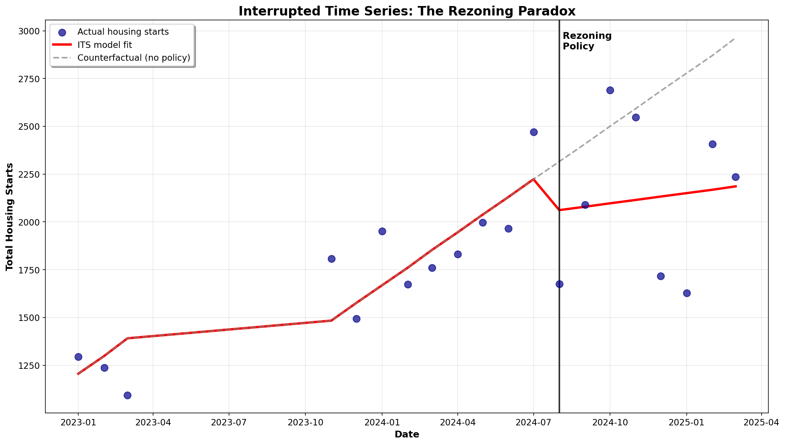

Publications
Policy Research & Data Repositories
This page collects all research papers and datasets published through Camille's Lot. Following the academic preprint model (inspired by arXiv and Zenodo), all work is versioned for transparency. Each publication maintains a complete version history, allowing readers to see how research evolves over time.
Research Papers

The Rezoning Paradox POLICY ANALYSIS
Why does every single person around me say housing sucks?
When Calgary implemented citywide blanket rezoning in August 2024, removing density restrictions across residential neighborhoods, it offered a natural experiment to test YIMBY theory in practice. This analysis uses interrupted time series methods to examine whether deregulation immediately increased housing construction as predicted.
Key Finding: Despite removing barriers, monthly housing starts fell 16% below the pre-existing growth trend. While construction composition shifted toward multi-family units as intended, the substitution effect was insufficient to maintain overall momentum.
Data Repositories

CMHC Housing Data Repository DATASET
Calgary Metropolitan Area Housing Starts and Rental Data
Curated dataset of housing construction and rental market data for the Calgary Census Metropolitan Area, sourced from Canada Mortgage and Housing Corporation (CMHC). This repository supports policy analysis of Calgary's housing market, including the 2024 blanket rezoning intervention.
Contents: Monthly housing starts by dwelling type (Nov 2023 - Mar 2025), raw CMHC survey data, and rental market indicators. Data provided under Statistics Canada Open License.
Tools

NGO Turnover Analysis Tool TOOL
Transforming temporal distributions into actionable governance insights
Built to address a fundamental challenge in the social services sector: turnover rates r ∈ [40%, 65%] are known, but the underlying dynamics—when people leave, why they leave, and what it costs—remain obscured.
Features: Case-based tenure analysis (categorizing terminations ∀e ∈ T₀ by tenure t), cohort retention tracking, Sankey flow diagrams, and cost modeling. Upload Excel data → receive actionable insights. Designed for HR managers who've never touched code.
About This Publication Model
This site follows the academic preprint versioning model, inspired by arXiv (Cornell) and Zenodo (CERN). Key principles:
- Version Transparency: All versions remain accessible. Readers can see how research evolves.
- Persistent Identifiers: Each version gets a unique identifier for stable citation.
- Machine-Readable Metadata: JSON metadata enables programmatic discovery and archival.
- Git-Backed Provenance: Full change history via GitHub provides complete audit trail.
- Open Access: All research freely available, no paywalls.
This approach prioritizes transparency over polish. Early findings are shared openly, with explicit versioning showing how conclusions change as data accumulates or methods improve.
Citing Work from Camille's Lot
When citing publications from this site, please include:
- Author name
- Publication year and date
- Title and version number
- Site name (Camille's Lot)
- Full URL to the specific version
Example citation:
Moreau, C. (2025). The Rezoning Paradox: Why does every single person around me say housing sucks? Camille's Lot, v1.0. https://camilleelot.github.io/papers/calgary-rezoning/v1.0/
Contact & Collaboration
Interested in the research? Have questions about methods or data? Want to collaborate?
Email me • Available for research opportunities and graduate studies, Fall 2026